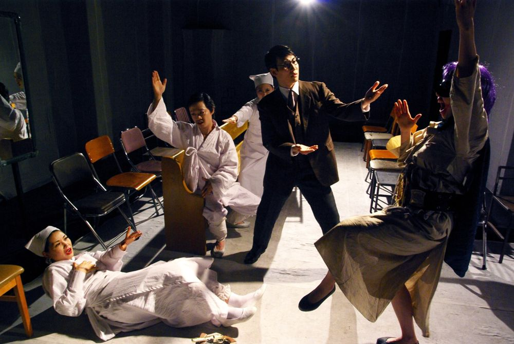

한 저명한 의사가 반편이로 태어난 부잣집 아들 상도와 가난하지만 총명한 시골 청년 무길의 두뇌를 맞바꾸는 수술을 한 뒤 벌어지는 소동. 1945년에 쓰인 진우촌의 희곡을 고치지 않은 채, B급 스릴러 같은 연출과 친일가요 합창, '두뇌수술의 유쾌한 결말'을 적은 기사문 등을 덧대 텍스트 자체를 대상화해 바라보게 한다. 윤한솔은 이 접근을 '자가당착적 희극'이라 부른다.
2012.4.19–29 / 연극실험실 혜화동1번지
2012.5.4–20 / 정보소극장
2013.2.27–3.17 / 연극실험실 혜화동1번지 - 대한민국연극대상 작품상 수상 기념
2015.12.11–27 / 연극실험실 혜화동1번지
2019.7.27–8.18 / CJ아지트
2020.8.14–9.6 / 연극실험실 혜화동1번지 - 공연예술창작산실 올해의 레퍼토리
2020.11.2–9 / 안동문화예술의전당 백조홀
2012 제5회 대한민국 연극대상 작품상
작: 진우촌
연출: 윤한솔
조연출: 정유진
의상: 김경희
조명: 우수정
음향: 전민배
무대 제작: 신승렬
기획: 김민경
출연(2019): 권태건, 김청순, 박소연, 신재환, 이동영, 이주형, 이지원, 장수호, 정양아, 정연종, 최문석, 최주연, 최지현
2020.8.6 6번째 재공연 소개 기사 (2020) (네이버 포스트)
2019.9.16 관람 후기 (2019) (티스토리)
2019.8.23 관람 후기 (2019) (네이버 블로그)
2019.8.20 관람 후기 (2019) (네이버 블로그)
2019.8.20 관람 후기 (2019) (네이버 카페)
2012 리뷰, 이정만
2012 언론보도 및 리뷰 모음
이전: 〈아무튼백석〉 | 다음: 〈사이코패스〉
아카이브로 돌아가기 | 아무 작품이나
발행일 2026.11.10